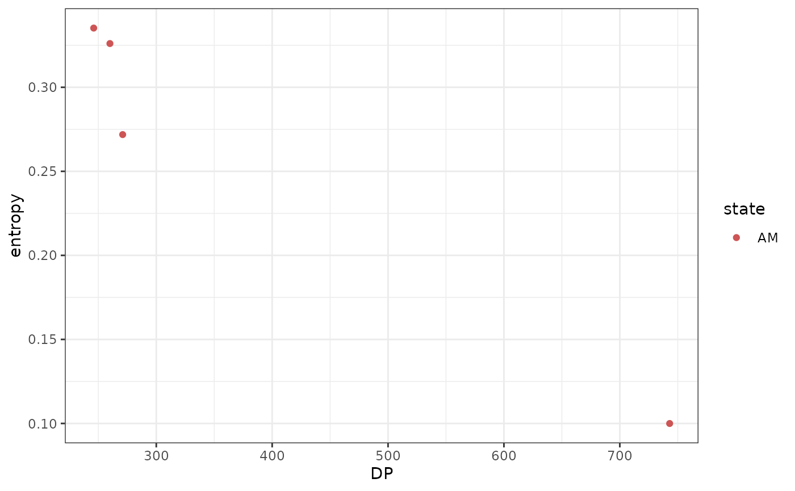
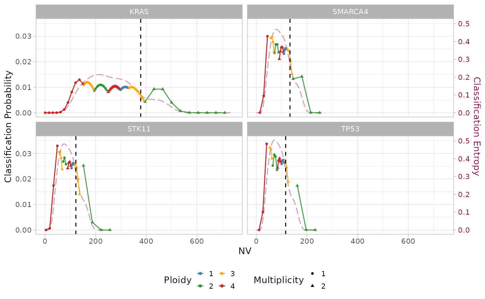
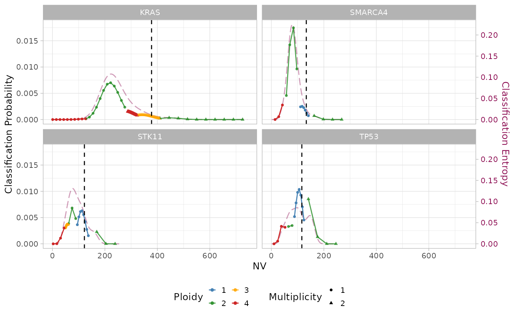
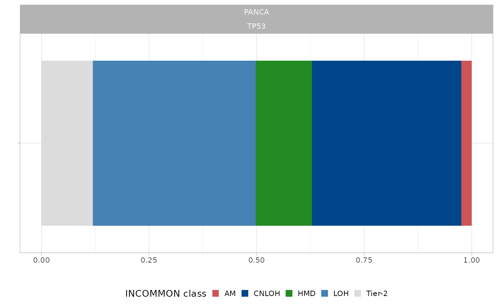

1. Inference of copy number and mutation multiplicity
Source:vignettes/a1_classify_mutations.Rmd
a1_classify_mutations.Rmd
library(INCOMMON)
#> Warning: replacing previous import 'cli::num_ansi_colors' by
#> 'crayon::num_ansi_colors' when loading 'INCOMMON'
library(dplyr)
#>
#> Attaching package: 'dplyr'
#> The following objects are masked from 'package:stats':
#>
#> filter, lag
#> The following objects are masked from 'package:base':
#>
#> intersect, setdiff, setequal, unionIn this vignette, we classify mutations from a single sample from the MSK-MetTropsim dataset provided with the package. We will look at the classification entropy and study the effect of a cut-off on this quantity. In addition, we will see how using the prior obtained from PCAWG whole genomes can help the classification of low quality data.
sample = 'P-0002081'
genomic_data = MSK_genomic_data %>% filter(sample == !!sample)
clinical_data = MSK_clinical_data %>% filter(sample == !!sample)
print(genomic_data)
#> # A tibble: 4 × 10
#> sample chr from to ref alt DP NV VAF gene
#> <chr> <chr> <dbl> <dbl> <chr> <chr> <int> <int> <dbl> <chr>
#> 1 P-0002081 chr12 25398285 25398285 C A 743 378 0.509 KRAS
#> 2 P-0002081 chr17 7577139 7577139 G A 246 116 0.472 TP53
#> 3 P-0002081 chr19 1221293 1221293 C A 260 122 0.469 STK11
#> 4 P-0002081 chr19 11141472 11141473 - C 271 133 0.491 SMARCA4
print(clinical_data)
#> # A tibble: 1 × 15
#> sample tumor_type purity OS_MONTHS OS_STATUS SAMPLE_TYPE MET_COUNT
#> <chr> <chr> <dbl> <dbl> <dbl> <chr> <dbl>
#> 1 P-0002081 LUAD 0.6 0.36 1 Metastasis 6
#> # ℹ 8 more variables: METASTATIC_SITE <chr>, MET_SITE_COUNT <dbl>,
#> # PRIMARY_SITE <chr>, SUBTYPE_ABBREVIATION <chr>, GENE_PANEL <chr>,
#> # TMB_NONSYNONYMOUS <dbl>, FGA <dbl>, AGE_AT_DEATH <dbl>By inspecting the clinical data table, we can see that this is a sample of a metastatic lung adenocarcinoma (LUAD), with purity 0.6, sequenced through the MSK-IMPACT targeted panel version 341.
The genomic data table contains 4 mutations affecting KRAS, TP53, STK11 and SMARCA4 genes.
Input preparation
First we initialise the input in INCOMMON format through function
init, using the gene roles from the COSMIC Cancer Gene
Census v.98 provided within the package.
x = init(genomic_data = genomic_data,
clinical_data = clinical_data,
gene_roles = INCOMMON::cancer_gene_census)
#> ── INCOMMON - Inference of copy number and mutation multiplicity in oncology ───
#>
#> ── Genomic data ──
#>
#> ✔ Found 1 samples, with 4 mutations in 4 genes
#>
#> ── Clinical data ──
#>
#> ℹ Provided clinical features:
#> ✔ sample (required for classification)
#> ✔ purity (required for classification)
#> ✔ tumor_type
#> ✔ OS_MONTHS
#> ✔ OS_STATUS
#> ✔ SAMPLE_TYPE
#> ✔ MET_COUNT
#> ✔ METASTATIC_SITE
#> ✔ MET_SITE_COUNT
#> ✔ PRIMARY_SITE
#> ✔ SUBTYPE_ABBREVIATION
#> ✔ GENE_PANEL
#> ✔ TMB_NONSYNONYMOUS
#> ✔ FGA
#> ✔ AGE_AT_DEATH
#> ✔ Found 1 matching samples
#> ✔ No mismatched samples
print(x)
#> ── [ INCOMMON ] 4 PASS mutations across 1 samples, with 4 mutant genes across 1
#> ℹ Average sample purity: 0.6
#> ℹ Average sequencing depth: 380
#> # A tibble: 4 × 25
#> sample tumor_type purity chr from to ref alt DP NV VAF
#> <chr> <chr> <dbl> <chr> <dbl> <dbl> <chr> <chr> <int> <int> <dbl>
#> 1 P-0002081 LUAD 0.6 chr12 2.54e7 2.54e7 C A 743 378 0.509
#> 2 P-0002081 LUAD 0.6 chr17 7.58e6 7.58e6 G A 246 116 0.472
#> 3 P-0002081 LUAD 0.6 chr19 1.22e6 1.22e6 C A 260 122 0.469
#> 4 P-0002081 LUAD 0.6 chr19 1.11e7 1.11e7 - C 271 133 0.491
#> # ℹ 14 more variables: gene <chr>, gene_role <chr>, OS_MONTHS <dbl>,
#> # OS_STATUS <dbl>, SAMPLE_TYPE <chr>, MET_COUNT <dbl>, METASTATIC_SITE <chr>,
#> # MET_SITE_COUNT <dbl>, PRIMARY_SITE <chr>, SUBTYPE_ABBREVIATION <chr>,
#> # GENE_PANEL <chr>, TMB_NONSYNONYMOUS <dbl>, FGA <dbl>, AGE_AT_DEATH <dbl>All the requirements for INCOMMON classification are satisfied. The average sequencing depth is 380.
Classification without prior knowledge and entropy cut-off.
We now run the classification step through function
classify. Here, we do not use any prior knowledge
(priors set to NULL) nor a cut-off on the
entropy (entropy_cutoff set to 1).
x = classify(x = x,
priors = NULL,
entropy_cutoff = 1)
print(x)
#> ── [ INCOMMON ] 4 PASS mutations across 1 samples, with 4 mutant genes across 1
#> ℹ Average sample purity: 0.6
#> ℹ Average sequencing depth: 380
#> ── [ INCOMMON ] Classified mutations with overdispersion parameter 0.01 and ent
#> # A tibble: 4 × 18
#> sample tumor_type purity chr from to ref alt DP NV VAF
#> <chr> <chr> <dbl> <chr> <dbl> <dbl> <chr> <chr> <int> <int> <dbl>
#> 1 P-0002081 LUAD 0.6 chr12 2.54e7 2.54e7 C A 743 378 0.509
#> 2 P-0002081 LUAD 0.6 chr17 7.58e6 7.58e6 G A 246 116 0.472
#> 3 P-0002081 LUAD 0.6 chr19 1.22e6 1.22e6 C A 260 122 0.469
#> 4 P-0002081 LUAD 0.6 chr19 1.11e7 1.11e7 - C 271 133 0.491
#> # ℹ 7 more variables: gene <chr>, gene_role <chr>, id <chr>, label <chr>,
#> # state <chr>, posterior <dbl>, entropy <dbl>There are \(N=4\) mutations with amplification (AM) and no mutation in any other state. The entropy though is quite high, with an average of \(\langle H(x)\rangle = 0.26\) and a maximum of \(\max{H(x)} = 0.34\).
classification(x) %>%
ggplot2::ggplot(ggplot2::aes(x = DP, y = entropy, color = state))+
ggplot2::geom_point(stat = 'identity')+ggplot2::theme_bw()+
INCOMMON:::scale_color_INCOMMON_class(aes = 'color')
It is evident that, given the sample purity \(\pi = 0.6\), mutations with lower sequencing depth have higher entropy, because they are harder to classify.
Visualising INCOMMON classification
INCOMMON allows to visualise a representation of the maximum a
posteriori classification through function
plot_classification. Let us can compare the results between
low-depth/high-entropy and high-depth/low-entropy classified
mutation:
plot_classification(x, sample = sample, assembly = T)
Differently from the first mutation, the low sequencing depth of the others shrink the domain of the Beta-Binomial mixture to a narrower region, where the components largely overlap. The different entropy curves (magenta line) reflect the increase in classification uncertainty for mutations with low sequencing depth.
Improving classifications with PCAWG priors
To improve the classification of poorly supported mutations, we include informative priors in the model. INCOMMONS provide a set of prior distributions (gene-specific pan-cancer or gene-tumor specific, if available) obtained from validated CNA calls of driver mutations in PCAWG whole-genomes.
Given the advantage of using prior knowledge, we can decide to be more restrictive about classification entropy, by setting an entropy cut-off. The default value is 0.2, which seems to be reasonable also for this particular sample.
x = classify(x = x,
priors = pcawg_priors,
entropy_cutoff = 0.2)
#>
#> ── INCOMMON inference of copy number and mutation multiplicity for sample ─────
#> ℹ Performing classification
#> → No LUAD-specific prior probability specified for KRAS
#> → Using a pan-cancer prior
#> → No LUAD-specific prior probability specified for TP53
#> → Using a pan-cancer prior
#> → No LUAD-specific prior probability specified for STK11
#> → Using a pan-cancer prior
#> → No LUAD-specific prior probability specified for SMARCA4
#> → Using a pan-cancer prior
#> ℹ There are:
#> • N = 0 mutations (HMD)
#> • N = 3 mutations (LOH)
#> • N = 0 mutations (CNLOH)
#> • N = 1 mutations (AM)
#> • N = 0 mutations (Tier-2)
#> ℹ The mean classification entropy is 0.04 (min: 0.01, max: 0.07)
print(x)
#> ── [ INCOMMON ] 4 PASS mutations across 1 samples, with 4 mutant genes across 1
#> ℹ Average sample purity: 0.6
#> ℹ Average sequencing depth: 380
#> ── [ INCOMMON ] Classified mutations with overdispersion parameter 0.01 and ent
#> # A tibble: 4 × 18
#> sample tumor_type purity chr from to ref alt DP NV VAF
#> <chr> <chr> <dbl> <chr> <dbl> <dbl> <chr> <chr> <int> <int> <dbl>
#> 1 P-0002081 LUAD 0.6 chr12 2.54e7 2.54e7 C A 743 378 0.509
#> 2 P-0002081 LUAD 0.6 chr17 7.58e6 7.58e6 G A 246 116 0.472
#> 3 P-0002081 LUAD 0.6 chr19 1.22e6 1.22e6 C A 260 122 0.469
#> 4 P-0002081 LUAD 0.6 chr19 1.11e7 1.11e7 - C 271 133 0.491
#> # ℹ 7 more variables: gene <chr>, gene_role <chr>, id <chr>, label <chr>,
#> # state <chr>, posterior <dbl>, entropy <dbl>There are no tumor-specific prior distributions for the mutant genes in this sample. However, a pan-cancer prior is used. We can see already some difference in the results: there are now 3 mutations in LOH and only one with amplification. Moreover, the mean entropy is now 0.04 and the maximum is 0.07!
No mutation was classified as Tier-2, meaning that in all cases the classification entropy was lower than the chosen cutoff.
Let’s have a look at how the maximum a posteriori classification has changed:
plot_classification(x, sample = sample, assembly = T)
Even if the overlapping of mixture components is still high, some of them have evidently lower weight, yielding higher confidence (i.e. lower entropy) in the maximum a posteriori estimate.
Visualising prior distributions
To understand what has changed in the mixture model after using the priors, let have a look at them. For example, without any prior the mutation on TP53 was classified as amplified (AM), with high overlapping between the components corresponding to AM and LOH states. When using the prior, LOH states are given more weight and the mutations is classified as LOH.
What is the prior distribution on TP53 in LUAD tumors? We can use the
function plot_prior to visualise it:
plot_prior(x = pcawg_priors, gene = 'TP53', tumor_type = 'LUAD')
#> → No LUAD-specific prior probability specified for TP53
#> → Using a pan-cancer prior
There is no prior distribution specific for lung adenocarcinoma, and so the used pan-cancer prior is visualised. LOH and CNLOH states have clearly higher frequency than AM, and this is the reason for the different weights that the corresponding components have in the model posterior.